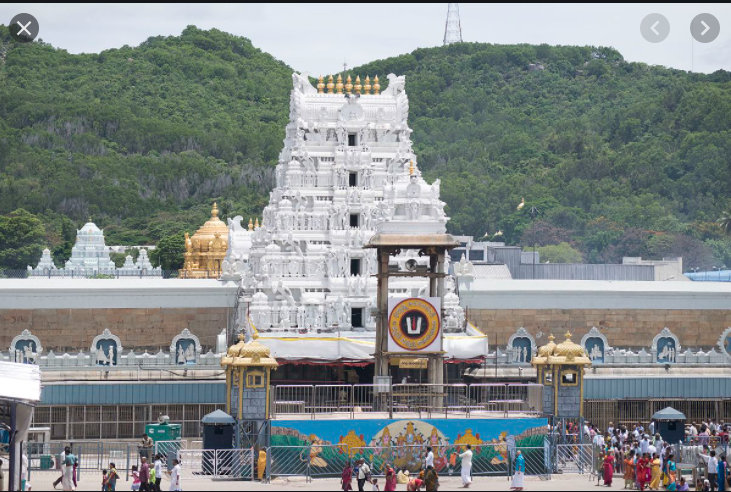
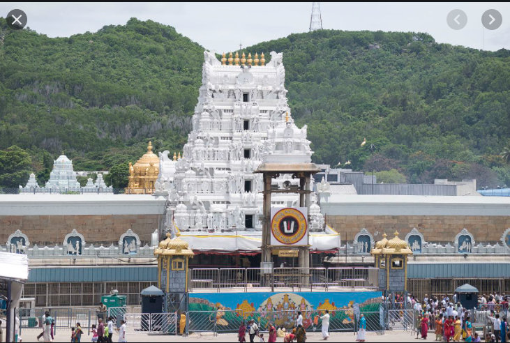

The Walk
The walk from down to up of the hills will take you approximately 4-7 hours, give or take an hour depending on the weather conditions and your physical shape.
The walk from down to up of the hills will take you approximately 4-7 hours, give or take an hour depending on the weather conditions and your physical shape.
Tirupathi has temple of Lord Venkateswara
It is in India,Andra Pradesh in chittoor District border between Andra and Tamil Nadu.
The Walk is free!